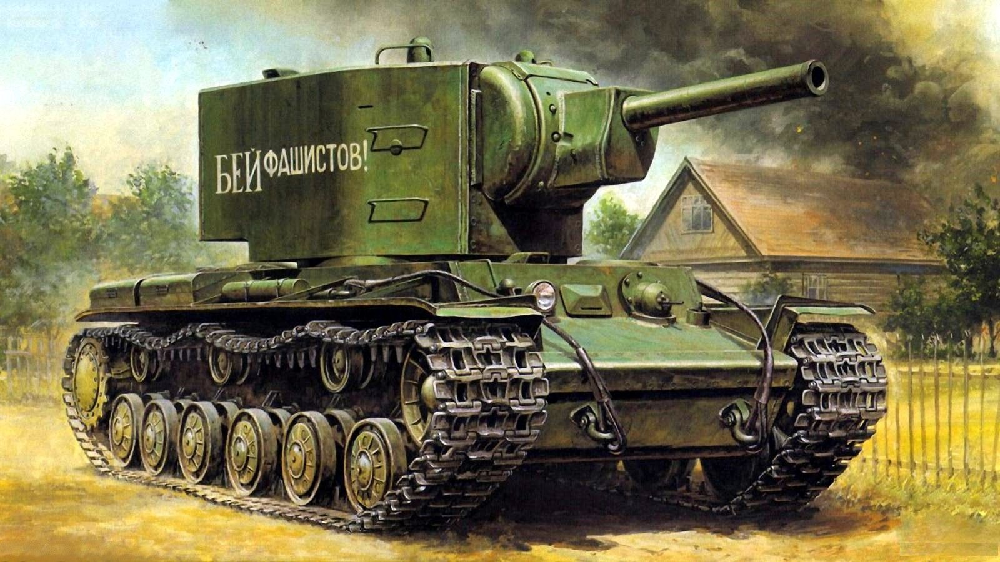
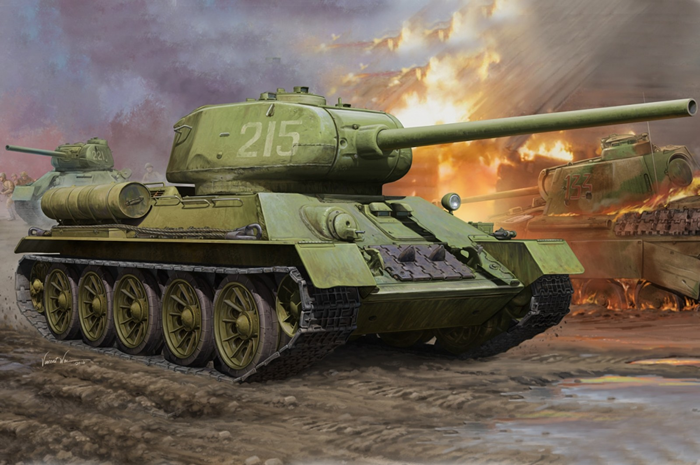
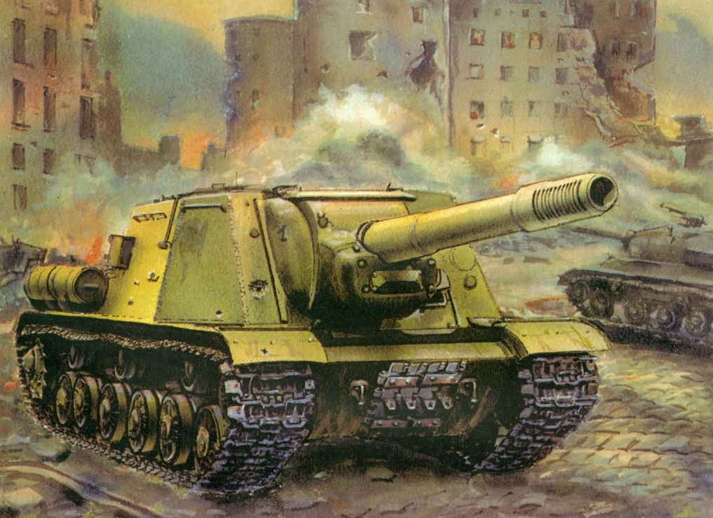

A story about a КВ-2
КВ-2 — советский тяжёлый штурмовой танк начального периода Великой Отечественной войны. Аббревиатура КВ означает «Клим Ворошилов» — официальное название серийных советских тяжёлых танков выпуска 1939—1943 гг., названных в честь героя Гражданской войны в России, военного и политического деятеля Ворошилова Климента Ефремовича. Первоначально именовался «КВ с большой башней». Эта машина была разработана конструкторским бюро Ленинградского Кировского завода (ЛКЗ) в январе 1940 года в связи с острой необходимостью Рабоче-крестьянской Красной армии (РККА) в хорошо защищённом танке с мощным вооружением для борьбы с фортификациями линии Маннергейма во время советско-финской войны 1939—1940 гг.
Конструкция Броневой корпус танка сваривался из катаных броневых плит толщиной 75, 40, 30 и 20 мм. Броневая защита равнопрочная (бронеплиты с толщиной, отличной от 75 мм, использовались только для горизонтального бронирования машины), противоснарядная. Броневые плиты лобовой части машины устанавливались под рациональными углами наклона. При этом первые 24 танка КВ-2 отличались от остальных машин формой башни и конфигурацией маски орудия. Более поздняя «пониженная» башня имела меньшую массу, что позволило хоть немного облегчить и без того перегруженное шасси. Внешне эти два типа башен легко различимы по их лобовой оконечности: установка МТ-1 имеет наклонные скуловые бронеплиты, а «пониженный» вариант — вертикальные. Оба варианта башен сваривались из катаных бронеплит, их толщина брони равнялась 75 мм. «Пониженная» модификация башни рядом со своей кормовой дверцей имела шаровую установку пулемёта ДТ. Башня устанавливалась на погон диаметром 900 мм в броневой крыше боевого отделения и фиксировалась захватами во избежание сваливания при сильном крене или опрокидывании танка. Угломерный круг башни размечался в тысячных для стрельбы с закрытых позиций. Механик-водитель располагался по центру в передней части бронекорпуса танка, слева от него находилось рабочее место стрелка-радиста. Четыре члена экипажа располагались в башне: слева от орудия были места наводчика и заряжающего, а справа — командира танка и помощника заряжающего. Посадка и выход экипажа производились через кормовую дверцу башни и два круглых люка: один в башне на месте командира и один в корпусе на месте стрелка-радиста. Корпус также имел днищевой люк для аварийного покидания экипажем танка и ряд люков, лючков и технологических отверстий для погрузки боекомплекта, доступа к горловинам топливных баков, другим узлам и агрегатам машины. Двигатель КВ-2 оснащался четырёхтактным V-образным 12-цилиндровым дизельным двигателем В-2К мощностью 500 л. с. (382 кВт) при 1800 об/мин, впоследствии мощность двигателя довели до 600 л. с. (441 кВт). Пуск двигателя обеспечивался стартером СТ-700 мощностью 15 л. с. (11 кВт) или сжатым воздухом из двух резервуаров ёмкостью 5 л в боевом отделении машины. КВ-2 имел плотную компоновку, при которой основные топливные баки объёмом 600—615 л располагались и в боевом, и в моторно-трансмиссионном отделении. Трансмиссия Танк КВ-2 оснащался механической трансмиссией, в состав которой входили: многодисковый главный фрикцион сухого трения «стали по феродо»; пятиступенчатая коробка передач тракторного типа; два многодисковых бортовых фрикциона с трением «сталь по стали»; два бортовых планетарных редуктора. ленточные плавающие тормоза Все приводы управления трансмиссией — механические. При эксплуатации в войсках наибольшее число нареканий и рекламаций в адрес завода-изготовителя вызывали именно дефекты и крайне ненадёжная работа трансмиссионной группы, особенно у перегруженных танков КВ выпуска военного времени. Практически все авторитетные печатные источники признают одним из самым существенных недостатков танков серии КВ и машин на его базе низкую общую надёжность трансмиссии в целом. Ходовая часть Подвеска машины — индивидуальная торсионная с внутренней амортизацией для каждого из 6 двускатных опорных катков малого диаметра по каждому борту. Напротив каждого опорного катка к бронекорпусу приваривались ограничители хода балансиров подвески. Ведущие колёса со съёмными зубчатыми венцами цевочного зацепления располагались сзади, а ленивцы — спереди. Верхняя ветвь гусеницы поддерживалась тремя малыми обрезиненными поддерживающими катками по каждому борту. Механизм натяжения гусеницы — винтовой; каждая гусеница состояла из 86—90 одногребневых траков шириной 700 мм и шагом 160 мм. Электрооборудование Электропроводка в танке КВ-2 была однопроводной, вторым проводом служил бронекорпус машины. Исключение составляла цепь аварийного освещения, которая была двухпроводной. Источниками электроэнергии (рабочее напряжение 24 В) были генератор ГТ-4563А с реле-регулятором РРА-24 мощностью 1 кВт и четыре последовательно соединённые аккумуляторные батареи марки 6-СТЭ-128. Потребители электроэнергии включали в себя: электромотор поворота башни; наружное и внутреннее освещение машины, приборы подсветки прицелов и шкал измерительных приборов; наружный звуковой сигнал и цепь сигнализации от десанта к экипажу машины; контрольно-измерительные приборы (амперметр и вольтметр); средства связи — радиостанция и танковое переговорное устройство; электрика моторной группы — стартер СТ-700, пусковое реле РС-371 или РС-400 и т. д. Средства наблюдения и прицелы Общая обзорность танка КВ-2 ещё в 1940 году оценивалась в докладной записке Л. Мехлису от военинженера Каливоды как крайне неудовлетворительная. Командир машины имел единственный смотровой прибор в башне — панораму ПТК. Механик-водитель в бою вёл наблюдение через смотровой прибор с триплексом, который защищался броневой заслонкой. Этот смотровой прибор устанавливался в бронированном люке-пробке на лобовой бронеплите по продольной осевой линии машины. В спокойной обстановке этот люк-пробка мог быть выдвинут вперёд, обеспечивая механику-водителю более удобный непосредственный обзор с его рабочего места. Для ведения огня КВ-2 оснащался двумя орудийными прицелами — телескопическим ТОД-9 для стрельбы прямой наводкой и перископическим ПТ-9 для стрельбы с закрытых позиций. Головка перископического прицела защищалась специальным броневым колпаком. Для обеспечения возможности огня в тёмное время суток шкалы прицелов имели приборы подсветки. Курсовой и кормовой пулемёты ДТ могли комплектоваться прицелом ПУ от снайперской винтовки с трёхкратным увеличением.[1] Средства связи Средства связи включали в себя коротковолновую радиостанцию 71-ТК-3 и внутреннее переговорное устройство ТПУ-4-Бис на 4 абонента. Радиостанциями оснащались все выпущенные танки КВ-2. Танковое переговорное устройство ТПУ-4-Бис позволяло вести переговоры между членами экипажа танка даже в сильно зашумленной обстановке и подключать шлемофонную гарнитуру (головные телефоны и ларингофоны) к радиостанции для внешней связи. Вооружение На танке КВ-2 устанавливалась 152-мм танковая гаубица обр. 1938/40 гг.(М-10Т) танковый вариант полевой гаубицы образца 1938 года (М-10). Гаубица М-10Т монтировалась на цапфах в башне и была полностью уравновешена, однако башня с орудием М-10Т уравновешенной не являлась: её центр масс не располагался на геометрической оси вращения. Как результат, штатный электромотор привода поворота башни даже при небольшом крене машины не справлялся со своей задачей. Гаубица М-10Т имела вертикальные углы наводки от −3 до +18°, при фиксированном положении башни она могла наводиться в небольшом секторе горизонтальной наводки (т. н. «ювелирная» наводка). Выстрел производился посредством ручного механического спуска. Боекомплект орудия составлял 36 выстрелов раздельного заряжания. Выстрелы (снаряды и метательные заряды в гильзах) укладывались в башне и вдоль обоих бортов боевого отделения. Так как машина никогда не планировалась на роль истребителя танков, а исключительно для огневой поддержки, то, по сравнению с широким ассортиментом боеприпасов 152-мм гаубицы М-10, штатный боекомплект КВ-2 был ограничен только одним видом боеприпасов: осколочно-фугасная стальная гаубичная граната ОФ-530 массой 40 кг (масса взрывчатого вещества — тротил или аммотол — от 5,47 до 6,86 кг) и специальным зарядом, получаемым из штатного заряда Ж-536 буксируемой гаубицы М-10 удалением нескольких равновесных пучков пороха. Однако на практике в обстановке хаоса лета 1941 года из-за отчаянного положения с обеспеченностью КВ-2 положенными по штату боеприпасами применялись любые виды 152-мм гаубичных снарядов, подходящих к гаубице М-10, которые только удавалось найти (в некоторых военных округах комплектность была на уровне 10 %, в других штатных боеприпасов для КВ-2 не было вовсе). То есть могли использоваться как бетонобойные снаряды Г-530, так и осколочные гаубичные гранаты сталистого чугуна О-530А, зажигательные снаряды, старые фугасные гранаты, шрапнель. Стрельба на полном заряде категорически запрещалась, так как из-за большой отдачи и отката могло заклинить башню, от сотрясения могли пострадать узлы и агрегаты моторно-трансмиссионной группы. По последней причине стрельба дозволялась только с места, что ещё больше повышало уязвимость танка в бою. Бронепробиваемость снарядов танковой гаубицы М-10Т в доступных источниках не приводится, однако на практике ей было по силам пробить броню любого бронеобъекта вермахта в 1941 и начале 1942 года. Бронепробиваемость морского полубронебойного снаряда обр. 1915/28 гг. составляла 72 мм стали с расстояния 1500 метров под углом 60 градусов[источник не указан 4494 дня]. Впрочем, прямое попадание 40-кг осколочно-фугасного снаряда ОФ-530 в танк противника гарантированно выводил его из строя. На первых 24 танках пулеметное вооружение отсутствовало. На новой модификации танка КВ-2 устанавливались уже три 7,62-мм пулемёта ДТ: спаренный с орудием, а также курсовой и кормовой в шаровых установках. Боекомплект ко всем ДТ составлял 3087 патронов. Эти пулемёты монтировались таким образом, что при необходимости их можно было снять с монтировок и использовать вне танка. Также для самообороны экипаж имел несколько ручных гранат Ф-1 и иногда снабжался пистолетом для стрельбы сигнальными ракетами. В начальном периоде войны КВ-2 легко уничтожал любой танк противника, и почти всегда безнаказанно, так как его броню не пробивали ни снаряды танковых орудий, ни штатной противотанковой артиллерии. Эффективно бороться с КВ-2 могли только изначально не предназначавшиеся для этих целей зенитные орудия Flak 18/36/37 калибром 88-мм. википедия
A story about a tanke T-34
Т-34 - советский средний танк, представленный в 1940 году. Его 76,2-мм (3 дюйма) танковая пушка была более мощной, чем у его современников[8], в то время как его 60-градусная наклонная броня обеспечивала хорошую защиту от противотанкового оружия. Подвеска Christie была унаследована от конструкции американского танка M1928 Дж. Уолтера Кристи, версии которого продавались Красной Армии без башни и документировались как "сельскохозяйственные тракторы", после того, как были отвергнуты армией США.[требуется цитирование]Т-34 оказал глубокое влияние на конфликт на Восточном фронте во время Второй мировой войны и оказал длительное влияние на конструкцию танков. После того, как немцы столкнулись с танком в 1941 году во время операции "Барбаросса", немецкий генерал Пауль Людвиг Эвальд фон Клейст назвал его "лучшим танком в мире"[9], а Хайнц Гудериан подтвердил "огромное превосходство" Т-34 над немецкими танками.[10] [11] Альфред Йодль, начальник оперативного штаба вооруженных сил Германии, отметил в своем военном дневнике "удивление от того, что это новое и, следовательно, неизвестное вооружение было применено против немецких штурмовых дивизий"[12], хотя его броня и вооружение были превзойдены позже в войне. Т-34 был изготовлен в городе Харькове, и хотя танк был первоначально разработан Михаилом Кошкиным, он сделал только модель 1940 года. Все остальные модели были созданы советским конструктором танков Александром Александровичем Морозовым[13]. Т-34 был основой бронетанковых войск Советской Красной Армии на протяжении всей войны. Его общие характеристики оставались практически неизменными до начала 1944 года, когда он получил повышение огневой мощи с появлением значительно улучшенного варианта Т-34-85. Метод его производства постоянно совершенствовался и рационализировался для удовлетворения потребностей Восточного фронта, что делало производство Т-34 более быстрым и дешевым. В конечном итоге Советы построили более 80 000 танков Т-34 всех модификаций, что позволило использовать их постоянно большее число, несмотря на потери десятков тысяч человек в боях против немецкого вермахта.[14] Заменив многие легкие и средние танки на вооружении Красной Армии, это был самый производимый танк войны, так кака также второй по производству танк всех времен (после его преемника, серии Т-54 / Т-55).[15] Потеряв 44 900 человек во время войны, он также понес самые большие потери танков за всю историю.[16]Его разработка привела непосредственно к созданию танков серии Т-44, затем Т-54 и Т-55, которые, в свою очередь, превратились в более поздние Т-62, которые составляют бронетанковое ядро многих современных армий. Варианты Т-34 широко экспортировались после Второй мировой войны, и совсем недавно, в 2010 году, более 130 все еще находились на вооружении.[17] википедия
A story about a ИСУ-152
ИСУ-152 (Объект 241) — советская тяжёлая самоходно-артиллерийская установка (САУ) периода Второй мировой войны. В названии машины буква «И», в дополнение к стандартному советскому обозначению «СУ» — самоходная установка, означает «на базе танка ИС». САУ того же калибра под названием СУ-152 выпускалась на другой танковой базе. Индекс 152 означает калибр основного вооружения машины. Разработана конструкторским бюро опытного завода № 100 в июне — октябре 1943 года и принята на вооружение Рабоче-Крестьянской Красной Армии (РККА) 6 ноября того же года. Тогда же началось её серийное производство на Челябинском Кировском заводе (ЧКЗ), продолжавшееся до 1946 года. Весной 1945 к производству подключился Ленинградский Кировский завод (ЛКЗ), собравший некоторое количество машин до 1947 года. Внешне ленинградские САУ отличались неподвижной бронировкой орудия — она не имела характерных рёбер по краям, боковины были более дутыми. На части машин она крепилась болтами снаружи, а не изнутри. ИСУ-152 широко применялись на завершающем этапе Великой Отечественной войны, практически во всех аспектах использования самоходной артиллерии. Помимо РККА, ИСУ-152 состояли на вооружении армий Польши и Чехословакии, единичные трофейные машины использовались Вермахтом и армией Финляндии. Известна только одна фотография (датированная 1944 г.) с ИСУ-152, используемой армией Финляндии. В послевоенный период ИСУ-152 прошли модернизацию и долго состояли на вооружении Советской армии. Они также поставлялись для оснащения египетских вооружённых сил. Переданные Египту самоходки принимали участие в арабо-израильских вооружённых конфликтах на Ближнем Востоке. Участвовали в Шестидневной войне в виде неподвижных огневых точек, закопанных в песок по надгусеничные полки. В Египет поставлялись немодернизированные варианты, однако на них была установлена система ПНВ с ИК-прожектором, смонтированном попарно с фарой в защитной корзине слева от орудия. Начиная с середины 1970-х годов, ИСУ-152 были сняты с вооружения Советской Армии и заменены более современными САУ; некоторое количество уцелевших от разрезки на металл машин сейчас служат памятниками и экспонатами в музеях различных стран мира. Жаргонное название ИСУ-152 — «Зверобой». В Вермахте её называли «Dosenöffner» (с нем. — «консервный нож»).
История создания Работы по созданию САУ ИСУ-152 начались в июне 1943 года в конструкторском бюро опытного завода № 100 в Челябинске в связи с окончательным решением о замене в производстве тяжёлого танка КВ-1с новым перспективным танком ИС-1. Однако, на базе танка КВ выпускалось тяжёлое штурмовое орудие СУ-152, потребность в котором действующей армии была чрезвычайно высока (в отличие от потребности в тяжёлых танках КВ). Отличные боевые качества СУ-152 послужили основанием для создания её аналога на базе танка ИС-1. Разработка ИСУ-152 велась под руководством Жозефа Яковлевича Котина, главного разработчика всей советской линейки тяжёлых танков. Главным конструктором ИСУ-152 был Г. Н. Москвин. На ранних стадиях проект новой САУ обозначался как ИС-152. В октябре 1943 года был построен первый прототип, «Объект 241». Он успешно прошёл заводские и государственные испытания; 6 ноября 1943 года постановлением Государственного комитета обороны № ГОКО-4504сс новая САУ была принята на вооружение РККА под окончательным названием ИСУ-152. В том же месяце началось серийное производство ИСУ-152 на ЧКЗ. В декабре 1943 года СУ-152 и ИСУ-152 ещё выпускались на ЧКЗ совместно, а со следующего месяца ИСУ-152 полностью заместила свою предшественницу СУ-152 на сборочных линиях. Ввиду большой загруженности ЧКЗ выпуском тяжёлых танков ИС-2 бронекорпуса для самоходок ИСУ поставлял Уральский завод тяжёлого машиностроения (УЗТМ). В процессе производства в конструкцию ИСУ-152 вносились незначительные изменения, направленные на повышение боевых и эксплуатационных качеств и снижение себестоимости машины. Во второй половине 1944 года был введён новый сварной нос корпуса из катаных бронеплит вместо одной цельнолитой детали, толщину бронемаски орудия увеличили с 60 до 100 мм. Также на САУ стали устанавливать 12,7-мм зенитный крупнокалиберный пулемёт ДШК и увеличили ёмкость внутренних и наружных топливных баков. Радиостанция 10Р была заменена на улучшенный вариант 10РК. Опытные прототипы: СУ-152-М (ИС-152 № 1) и ИС-152, «Объект 241» Планируемая замена тяжёлого танка КВ-1с перспективным танком прорыва ИС-85 потребовала и перевода СУ-152 на перспективную базу. Но этим работы над совершенствованием САУ не ограничивались. Ещё до боевого дебюта СУ-152 у неё был выявлен ряд серьёзных недостатков. В этой связи, 25 мая 1943 года распоряжением по заводу № 100 конструкторская группа самоходной артиллерии приступила к модернизации машины. Группу возглавляли Г. Н. Москвин и прикомандированный к ней Н. В. Курин, имеющий большой опыт в создании самоходных артиллерийских установок. Совместно с заказчиком были выработаны расширенные тактико-технические требования на модернизированный образец тяжёлой САУ, который на тот момент в документах обозначался как СУ-152-М. Согласно первоисточникам они включали в себя следующее: Разработка тяжёлого самохода СУ-152-М ведётся на замену самохода КВ-14. 1) для самохода использовать шасси и МТО танка «Объект 237»; 2) основное вооружение сохранить в виде 152-мм самоходной пушки МЛ-20С обр. 1942 г., имеющей внутреннюю баллистику гаубицы-пушки указанного калибра обр. 37 г.; 3) необходимо дополнить пушечное вооружение тяжёлого самохода оборонительным пулемётом кругового обстрела калибра 7,62-мм или зенитным пулемётом калибра 12,7-мм; 4) увеличить толщину брони лобового листа корпуса до 90—100 мм; 5) обзорность увеличить применением нескольких смотровых приборов типа Mk-IV на поворотном основании; 6) улучшить вентиляцию боевого отделения введением дополнительного вентилятора или предусмотреть продувку ствола орудия после выстрела[1]… Завершение проекта планировалось к 1 июля 1943 года, но группа справилась с заданием раньше срока, в конце июня была начата постройка опытного образца, под названием ИС-152. Однако в дальнейшем наступает неясность — новые танки ИС-85, КВ-85 и САУ ИС-152 были показаны в Кремле руководству страны во главе с И. В. Сталиным, однако, в мемуарах участников событий и располагаемых архивных документах отсутствуют: точная дата этого смотра и точный список присутствовавших. Называется день 31 июля 1943 года, но согласно документам ЧКЗ тогда танки КВ-85 и ИС-85 находились на испытаниях. Историк М. Н. Свирин предполагает проведение показа 31 августа[2], а группа авторов многочисленных публикаций на бронетанковую тематику под руководством полковника И. Г. Желтова — 8 сентября[3]. Также не ясно, какая САУ показывалась руководству. Предполагается, что это была опытная САУ ИС-152, но существует фотография, на которой запечатлён И. В. Сталин в Кремле на самоходке, внешне идентичной с СУ-152[4]. Возможно, что руководству показывался модернизированный образец СУ-152, на котором были опробованы усовершенствования, предполагаемые к внедрению на ИС-152. Так или иначе, но упомянутым выше постановлением ГКО № 4043сс от 4 сентября 1943 года именно САУ ИС-152 принималась на вооружение наряду с КВ-85 и ИС-85, но по документам ЧКЗ она оказалась значительно дороже серийной СУ-152. В течение сентября — октября 1943 года производилось совершенствование конструкции САУ ИС-152, был построен второй опытный образец: Объект 241 на базе танка ИС, который по стоимости оказался сравнимым с серийной СУ-152. Он был принят к серийному производству 6 ноября 1943 года как ИСУ-152[5]. википедия